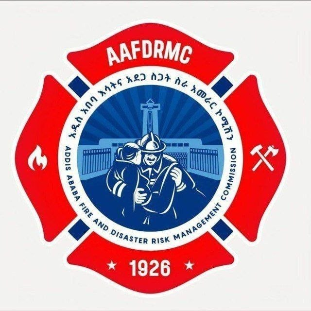

ውድ ደንበኞቻችን እና ጎብኝዎቻችን ፣ ወደ ተቋማችን እንኳን ደህና መጣቹ! ይህ በአ.አ እሳትና አደጋ ስጋት ስራ አመራር ኮምሽን በማዕከል የሚገኙ ቢሮዎችን ለደንበኞች የሚፈልጉትን አገልግሎት እና የሥራ ክፍል በቀላሉ ማግኘት እንዲችሉ የአቅጣጫና የአገልግሎት መረጃው ከዚህ በታች በአግባቡ ተሰድረዋል እንድትጠቀሙበት በደስታ አቅርበናል፡፡
ለተጨማሪ መረጃ፦
በማዕከላዊ የመስተናገጃ ጠረጴዛ ላይ የሚገኙትን አስተናጋጆቻችንን መጠየቅ ይችላሉ። ስላገለገልንዎት ደስተኞች ነን! ፡፡